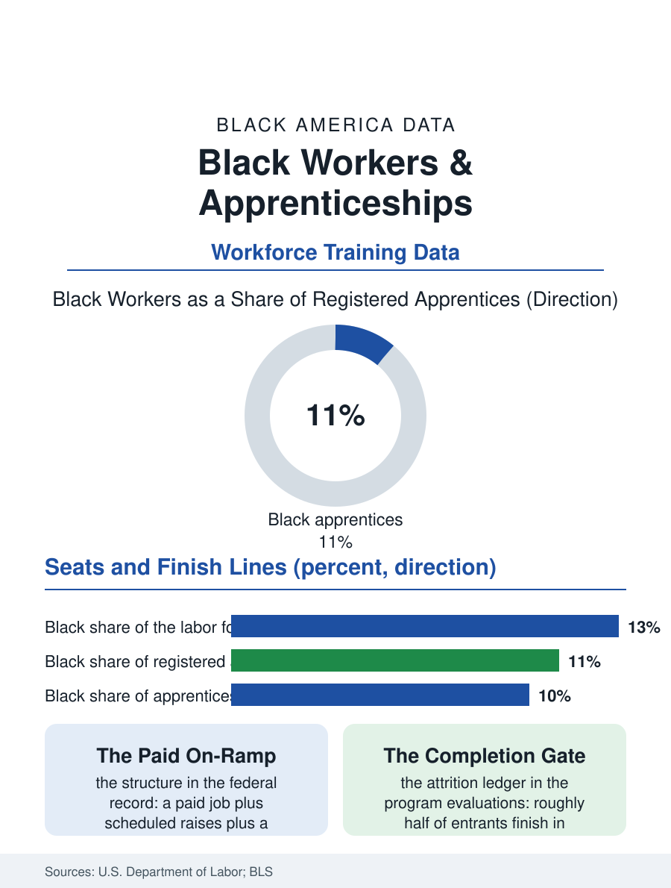

Black Employment
Earn While You Learn: Black Workers and Apprenticeship
Apprenticeship is the paid on-ramp to the good trades jobs, and Black workers hold a modest share of its seats. The apprenticeship file, from intake design to the completion gate.

The registered apprenticeship is America's oldest earn-while-you-learn institution: a real job, a structured curriculum, a wage that rises on a schedule, and a portable credential at the end, all without tuition debt. More than half a million apprentices are active in the system in recent federal counts, and Black workers hold a share of those seats that runs below their share of the labor force, clustered in particular trades and regions. This article reads the apprenticeship file, the on-ramp whose design decides who gets the good trades jobs.
How the Seats Are Filled
The Department of Labor's apprenticeship office registers programs sponsored by employers, unions, and intermediaries, across construction, manufacturing, health care, transportation, and a growing technology fringe. Construction dominates the rolls, and within construction the allocation of seats follows the industry's own customs. Joint union-employer committees, merit-shop associations, and individual contractors recruit through channels ranging from public announcements to the foreman's phone contacts, and the entering classes mirror the channel: open, advertised, exam-ranked intakes enroll noticeably more diverse classes in the programs that report demographics, while referral-heavy intakes reproduce the incumbent workforce. Black apprentices are best represented in the public-infrastructure trades and the building trades of the older industrial cities, and thinnest in the highest-wage mechanical trades in many markets. The pre-apprenticeship layer, short training programs meant to prepare candidates for application, has grown into an industry of its own, and its evaluations supply the file's consistent finding: graduates of quality pre-apprenticeships, especially those with direct-entry agreements guaranteeing interviews or seats, convert to registered status at multiples of the walk-in rate.
Completion, the Real Gate
Getting in is only the first gate; the registry's harder statistic is completion, with roughly half of entrants finishing in many trades. The attrition is economic before it is academic. Apprentice wages start low by design, a fraction of the journeyman rate, and the apprentice carries adult costs: transportation to shifting job sites, tools, child care timed against dawn start times, and the income gaps of seasonal construction. Black apprentices carry these costs against the thinnest household wealth cushion in the federal surveys, so identical wage schedules filter unequally. Programs that added supports, stipends, tool libraries, child care assistance, and cohort mentoring, report completion gaps narrowing in their own ledgers, and the wage payoff for finishing is the system's founding bargain: completers' lifetime earnings in the federal evaluations outrun non-completers by wide margins, with the credential recognized across employers in a way firm-specific training never is. The diversification of apprenticeship beyond construction, into nursing support roles, insurance, banking operations, and information technology, matters to this file because those sectors employ Black workers at higher baseline rates and recruit from workforces that already include them.
The Expansion Question
Federal policy has spent a decade trying to widen this door: grants for pre-apprenticeship diversity, targets attached to infrastructure projects, state tax credits, and an official goal of serving a million apprentices. The construction boom funded by infrastructure law runs through the same trades where Black representation is thinnest, which converts an equity question into a logistics question: the work is coming whether or not the intake changes. Community organizations rooted in Black neighborhoods have built the most successful intake machinery in the record, programs that recruit at churches and high schools, prepare candidates for the aptitude tests, walk them through applications, and stay in contact through the first year, functioning as the referral network the incumbent workforce always had. The apprenticeship file closes with the system's own arithmetic. A seat is a four-year asset worth, in the evaluations, hundreds of thousands of dollars in lifetime earnings over the non-credentialed path. Who receives that asset is decided by intake design, support design, and completion design, three levers entirely within human control, in a program old enough to have proven the model and young enough, in its current expansion, to still be choosing its demographics.
The historical line belongs in the file as well. Apprenticeship's American lineage runs through the building trades' long exclusion, when Black craftsmen trained in parallel institutions, church basements, union rivals, and the federal wartime programs that briefly pried the door open, and carried master-level skill in a system that refused to credential it. The modern registry's demographics are not a fresh problem but an inherited one, and the programs making the fastest progress tend to be those that acknowledge the inheritance directly, building their intake where Black craftsmen have always actually been trained and trusted, rather than waiting for applications to arrive through channels that were never built to carry them.
More in Black Employment
The Black Unemployment Rate: The Two-to-One Pattern
Black unemployment runs at roughly twice the White rate — 5.5 percent against 3.3 percent in annual averages — a ratio stable across five decades of federal data. How it is measured and why it persists.
Black Median Weekly Earnings: The 80-Cent Ratio
Black full-time workers earn a median of about $900 a week — roughly 80 cents for every dollar White workers earn. The BLS earnings data by group, gender, and occupation.
Black Labor Force Participation: Working at National Rates
Black labor force participation runs at roughly the national rate — and Black women participate at higher rates than White women. The BLS participation data.
Source: U.S. Department of Labor, Employment and Training Administration, registered apprenticeship statistics; apprenticeship program evaluations.